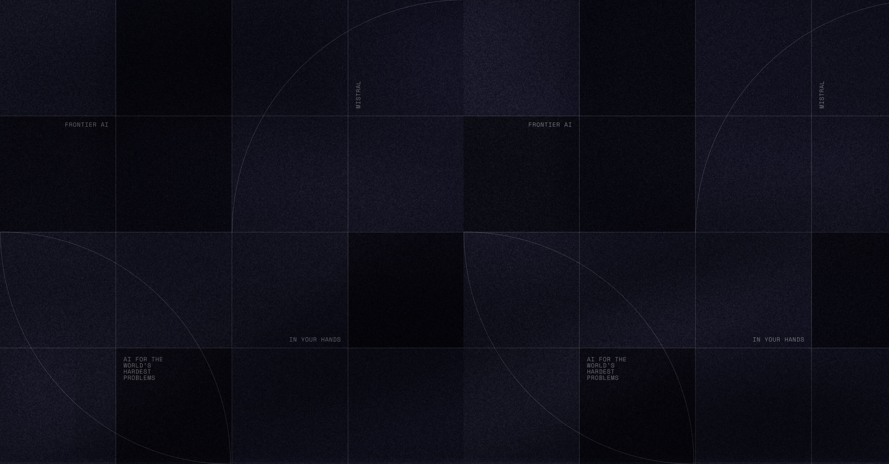
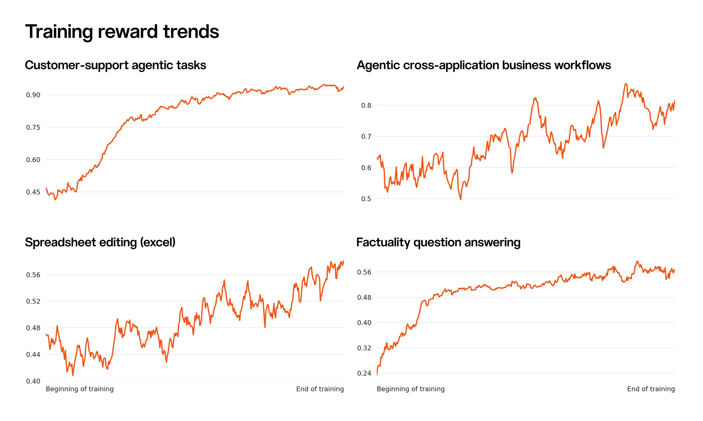
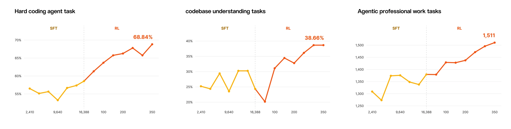
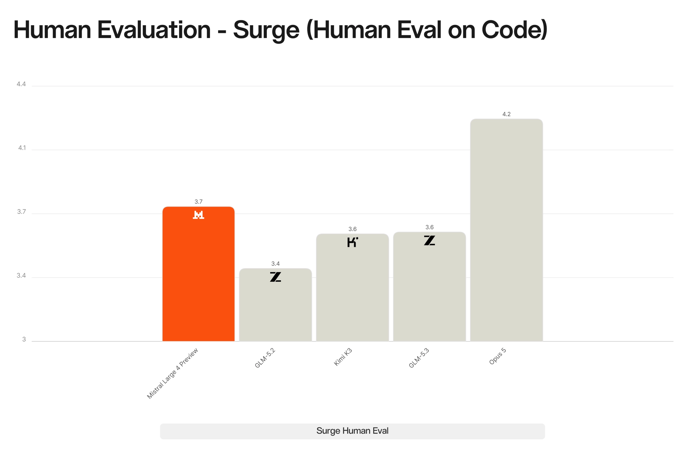

Mistral Large 4

先看清楚发布状态
| 项目 | 已披露内容 | 不能据此推断的内容 |
|---|---|---|
| 架构规模 | 原生多模态 MoE，约 1T 总参数、52B 激活参数 | 层数、专家路由、视觉编码器和具体 attention 配方 |
| 训练基础设施 | 从零训练，欧洲自有数据中心，3,800 张 NVIDIA Grace Blackwell GPU | 预训练总 tokens、训练时长与计算效率 |
| 语言 | 训练语料覆盖 160+ 语言 | 每种语言的能力和训练比例相同 |
| 首次可用 | 2026-10-06，Mistral Studio/API Preview | 后续 checkpoint 与本次 Preview 完全不变 |
| 权重 | 官方计划月底发布 | 本次已能下载、许可证已确定 |
| 发布时价格 | 输入 $1.36/M、输出 $4.18/M tokens | 每个任务总成本必然低于其它模型 |
把异构任务放进同一个训练闭环
官方强调 composable environment interface：单轮问答、科学代码、安全对齐、事实性和长时程工具任务，可以共用环境接口、代码沙箱、搜索和外部 API。验证器并非只有“答对/答错”，而是按任务组合 reward model、单元测试、LLM judge 与静态检查。
我的理解是：这减少了新增环境的工程门槛，也让同一策略同时学习多个能力。但是“统一接口”没有自动解决奖励口径不一致：单元测试通过率、主观 judge 分数和安全拒绝率仍然需要校准，避免某一类便宜奖励主导训练。
运行时由可伸缩 actor 集群并行生成数万条 rollout，训练异步推进。官方称支持跨多次上下文压缩、百万 tokens 级别的 rollout budget，并通过工程优化减少策略滞后和 off-policy drift。这里的百万 tokens 指长轨迹预算，不是已经披露了一个固定百万 tokens 的模型上下文上限。
| RL 工程披露 | 阅读时应如何理解 |
|---|---|
| 单轮约 3k GPU 规模 | 是所描述 RL 运行的量级，不与 3,800 张预训练集群混为一谈 |
| 每天约 33B 生成 tokens | 包含所有生成内容；不是每天 33B 有效监督 tokens |
| 过滤/遮罩后约 16B trainable completion tokens | 可训练完成 tokens 约占生成量 48.5%，不是任务成功率 |
| rollout 与训练异步 | 提高吞吐的同时，需要控制生成策略与训练策略的版本差 |
| 不同环境共用资源 | 要检查环境重置、外部工具稳定性及任务间污染 |

奖励曲线上升是训练过程中“学会提高训练目标”的证据，不单独证明未知任务的泛化。官方另外展示 SFT→RL 对下游评测的贡献，应与训练奖励曲线分开读。

图中的三项任务终点是 68.84%、38.66% 和 1,511；这些任务标签与下方发布时 DeepSWE、SWE-Atlas、AA-Briefcase 的定义/版本并不完全相同。不能为了凑一张表，擅自把训练曲线终点替代正式评测数值。
能力证据：看分项，不看一个笼统“最强”
| 发布正文指标 | ML4 Preview | 口径与限制 |
|---|---|---|
| DeepSWE v1.1 | 61.7% | 软件工程任务；不要与其它 DeepSWE 版本混列 |
| Terminal-Bench 4 | 28.3% | 版本 4，不是常见的 TB 2.0/2.1 |
| SWE-Atlas-QnA | 59.4% | 仓库理解问答，不等同修复成功率 |
| Coding Agent Index | 49.8% | 聚合指数，不是上述任务的简单通用成功率 |
| AutomationBench | 59.9% | 官方描述为 657 个跨应用业务工作流 |
| AA-Briefcase | 1,393 Elo | 排名量表，不是百分比 |
| Dense 200 | 42% | 视觉定位专项；不证明所有多模态任务领先 |
| Cybench | 93% | 40 个安全竞赛挑战；小样本与拒绝策略影响明显 |
| Cyber 漏洞复现并修补测试 | 82% | 官方描述某项测试；不泛化为完整 Cyber Index 得分 |
| B3 攻击抵抗 | 93.3% | 间接提示注入基准，不代表生产环境无风险 |
| KORA | 1.691/2 | 对话行为评价；与安全攻击通过率是不同维度 |

Surge AI 的盲测隐藏模型身份，专业标注者按 1–5 分评分。ML4 为 3.74，低于 Claude Opus 5 的 4.22，高于该组 Kimi K3（3.59）、GLM-5.3（3.60）和 GLM-5.2（3.40）。这支持“该组任务里代码质量有竞争力”，不支持“全面超过闭源旗舰”。
安全指标还要分辨能力与行为。若某个闭源模型因为策略拒绝而在漏洞复现任务接近零分，低分不一定代表它不会做。另一方面，减少合法请求误拒与拦截危险请求应分别验收；开放部署也不等于安全机制无用。
对 Agent Training 的判断
值得转化成实验的是三组对照：
- 固定基础模型和 rollout token 总量，比较单环境 RL 与多环境混合；同时看目标环境成绩和未见环境泛化。
- 固定训练样本量，改变 actor 队列长度/策略版本差，检查长轨迹的 off-policy drift、有效完成 tokens 与失败恢复能力。
- 把结果验证、过程静态检查与 LLM judge 分开消融；报告每种奖励的误判、总 verifier 成本与每个成功任务的墙钟时间。
这些是阅读后的研究建议，没有在本机复现训练或运行模型评测。发布时官方 RL 仍在继续，所有结果需绑定 Preview 日期与 harness。
一手资料与继续阅读
- [S1] Tech Blog：Introducing Mistral Large 4，2026-10-06。
- 原始正文与官方图片抓取记录：保留 URL、抓取时间和 SHA-256；本轮未下载 PDF。
- 基模主题索引
- 中文 Poster
📊 相关可视化: Mistral Large 4 中文 Poster